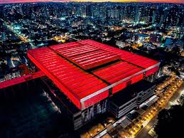
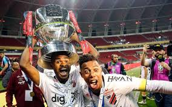
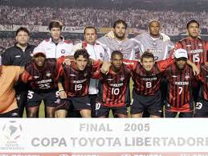
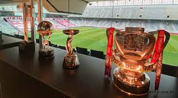
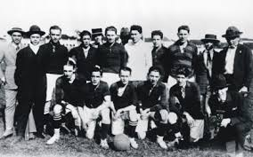
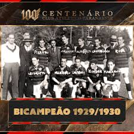
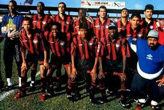

Athlético Paranaense!
Sobre o Athlético Paranaense
O Athlético Paranaense é um clube de futebol brasileiro, fundado em 26 de março de 1924, em Curitiba, no estado do Paraná. O clube tem uma grande história e uma grande tradição no futebol brasileiro, e tem conquistado vários títulos estaduais e nacionais.
- Campeonato Paranaense: 24 títulos
- Copa do Brasil: 1 título 
- Copa Libertadores da América: vice-campeão em 2005 

- 1924: Fundação do clube 
- 1929: Primeiro título estadual 
- 1990: Profissionalização do clube 
Historia do clube Athletico Paranaense
O Athletico surge em 1924 após unificação de dois times: América e Internacional. Após inúmeras discussões, os dois lados foram, aos poucos, aparando arestas. No dia 26 de março, Arcésio Guimarães tomou posse como primeiro presidente da história. Era o início da trajetória centenária do Club Athletico Paranaense.
Início promissor
O primeiro título veio na temporada seguinte. Em doze jogos, foram oito vitórias, três empates e apenas uma derrota, com aproveitamento de 79%. O Athletico de Tapyr; Harold e Marreco; Lourival, Falcine e Nano; Ary, Marreco, Urbino, Maneco e Motta, superou o Savóia na final, por 3 a 1, e ficou com o troféu do Paranaense de 1925. Ainda na primeira década, o clube voltou ao topo do futebol estadual entre 1929 e 1930, com a conquista do primeiro bicampeonato. Em 29, inclusive, o Rubro-Negro foi campeão de forma invicta. Na temporada seguinte, superou o rival Coritiba na decisão.